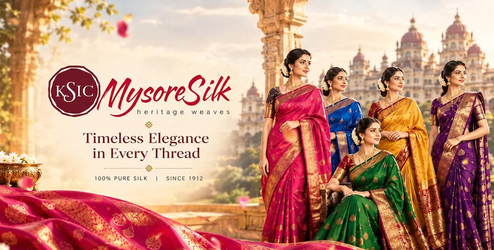

Version 1
Heritage Weaves
Single-page experience with heritage storytelling, silk-thread animations and light and dark themes.
View Version 1 →
Version 2
Online Store
Multi-page shop with video hero, product catalogue, product pages, cart, wishlist and showroom locator.
View Version 2 →